Assignment #4-1에서 설계한 PostgreSQL 스키마(릴레이션 9개)를 그대로 사용해, 과제 저장소의 Node.js + EJS 스켈레톤 코드 위에 도서관 대출·반납 웹 애플리케이션을 구현했다. 스켈레톤에서 더미 데이터를 반환하던 모든 컨트롤러를 실제 SQL 질의로 바꾸었고, 스켈레톤에 없던 카테고리 추가와 인기 저자 차트, 그리고 4-1 보고서에서 설계한 추가 기능 4가지(리뷰, 예약, 평점 통계, 대출 통계)를 새로 만들었다. 4-1에서 제출한 스키마는 구현 과정에서 바꾸지 않았다.
| 구분 | 사용 기술 (버전) | 용도 |
|---|---|---|
| 런타임 | Node.js 22 | 서버 실행 (Express 5는 Node.js 18 이상 필요) |
| 웹 프레임워크 | Express 5.1.0 | 라우팅, 폼 파싱(express.urlencoded), 정적 파일 |
| 템플릿 엔진 | EJS 3.1.10 | 서버 측 HTML 렌더링. <%= %>로 출력값을 HTML 이스케이프 |
| 데이터베이스 | PostgreSQL 18 | 스키마, 제약조건, 집계 질의 |
| DB 드라이버 | node-postgres pg 8.16.3 | 연결 풀, $n 바인드 파라미터, 트랜잭션 |
| 세션 | express-session 1.18.2 | 로그인 상태 (메모리 저장소, HttpOnly·SameSite=Lax 쿠키) |
| 설정 | dotenv 17.2.1 | .env의 DATABASE_URL 로드 |
| UI 보조 | Choices.js 11.1.0 | 도서 추가 화면의 저자·카테고리 선택과 새 이름 입력 |
| 비밀번호 | Node 내장 crypto.scrypt | 16바이트 무작위 솔트 + scrypt 해시, timingSafeEqual 비교 |
요청은 routes/routes.js → 접근 제어 미들웨어(isAuthenticated, isAdmin) → 컨트롤러 → pg → EJS 뷰 순서로 처리된다. 모든 기능에 다음 원칙을 공통으로 적용했다.
| 원칙 | 구현 |
|---|---|
| SQL 인젝션 방지 | 사용자 입력은 모두 $1, $2 바인드 파라미터로 전달한다. 바인드할 수 없는 ORDER BY 컬럼·방향과 검색 대상 컬럼은 코드에 정한 화이트리스트에서만 고른다. |
| 여러 문장이 필요한 작업은 트랜잭션 | config/db.js의 transaction(fn)이 한 연결에서 BEGIN·COMMIT을 실행하고, 도중에 오류가 나면 ROLLBACK한다. 대출·반납·도서 추가·복본 삭제·예약이 이를 사용한다. |
| 동시 요청 대비 | 대출, 복본 삭제, 예약처럼 검사한 뒤 변경하는 작업은 대상 행을 SELECT ... FOR UPDATE(예약은 FOR SHARE)로 잠근 뒤 검사한다. 회원가입, 카테고리 추가, 새 저자·카테고리 생성처럼 한 행을 넣는 작업은 ON CONFLICT로 동시 삽입을 처리한다. 그래도 놓치는 경우는 4-1에서 설계한 유일 제약과 부분 유일 인덱스가 최종적으로 막는다. |
| 규칙 위반 응답 | 규칙 위반은 상태 코드(400/403/404)와 함께 사용자가 이해할 수 있는 메시지를 오류 페이지에 보여 준다. 예상하지 못한 500 오류는 내부 메시지를 숨기고 Internal Server Error만 보여 준다. |
| 날짜 표기 | 날짜는 SQL의 to_char(..., 'YYYY.MM.DD')로 문자열로 만들어 보낸다. JS Date를 JSON으로 보내면 UTC로 바뀌어 하루 전 날짜로 보이는 문제를 피했다. |
| 경로의 id | router.param('id')가 1~9자리 숫자가 아닌 :id를 질의 전에 404로 처리한다. |
/register): ID는 영문·숫자·밑줄 3~20자만 허용한다. 같은 규칙이 Users.user_id의 CHECK 제약으로도 걸려 있어, 화면의 복본 표에 ID를 그대로 출력해도 안전하다. 중복 ID는 INSERT ... ON CONFLICT (user_id) DO NOTHING의 영향 행 수로 판단하므로 두 사람이 동시에 같은 ID로 가입해도 하나만 성공한다.2022065250과 정확히 같아야 한다. 코드는 검사에만 쓰고 저장하지 않는다. 그 밖의 역할 값은 모두 일반 사용자로 저장된다.솔트:해시 형식(scrypt)으로 저장한다./login): ID가 없을 때와 비밀번호가 틀렸을 때 같은 메시지(Invalid username or password.)를 보여 주어 ID 존재 여부가 드러나지 않게 했다. 로그인에 성공하면 session.regenerate로 세션 ID를 새로 발급해 세션 고정 공격을 막는다.role이 admin이면 상단 메뉴에 Categories, Users가 추가된다. 관리자 경로는 모두 isAuthenticated, isAdmin을 거치므로 일반 사용자가 주소를 직접 입력해도 403이 된다.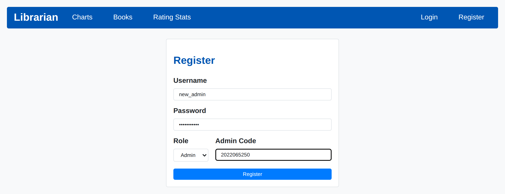
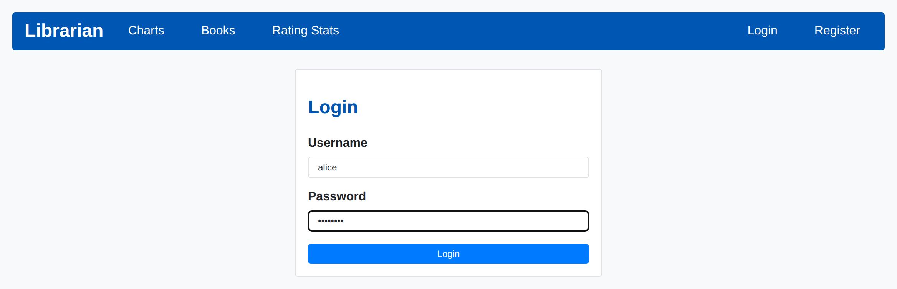
/books는 책마다 한 행으로 제목, 저자, 카테고리, 전체 복본 수, 대출 가능 복본 수를 보여 준다. 카테고리 문자열과 두 개수는 각각 상관 서브쿼리로 구했다. 카테고리와 복본을 한 번에 JOIN하면 행이 곱해져 개수가 틀어지기 때문이다.
SELECT b.book_id AS id, b.title, a.author_name AS author,
COALESCE((SELECT string_agg(c.category_name, ', ' ORDER BY c.category_name)
FROM Book_Category bc JOIN Category c ON c.category_id = bc.category_id
WHERE bc.book_id = b.book_id), '') AS categories,
(SELECT COUNT(*)::int FROM BookCopy cp WHERE cp.book_id = b.book_id) AS total_quantity,
(SELECT COUNT(*)::int FROM BookCopy cp WHERE cp.book_id = b.book_id AND cp.status = 'available') AS available_quantity
FROM Book b JOIN Author a ON a.author_id = b.author_id
ILIKE)로 찾는다. 입력의 %, _, \는 이스케이프해 글자 그대로 찾는다. 카테고리 검색은 EXISTS로 걸러서, 결과에서도 그 책의 모든 카테고리를 보여 준다(그림 4의 Dune)./api/books/:id/instances(로그인 필요)가 복본마다 상태, 대출자, 대출일을 JSON으로 돌려준다. 대출 가능한 복본에는 Borrow, 본인이 빌린 복본에는 Return, 남이 빌린 복본에는 비활성화된 Borrowed 버튼이 붙는다.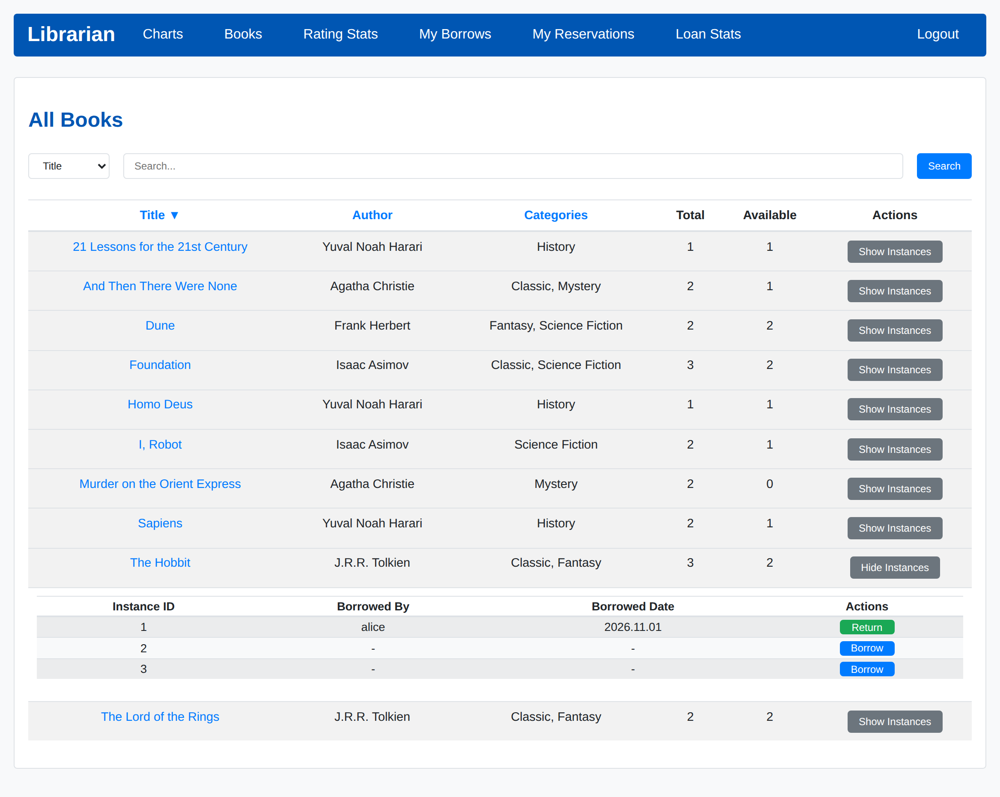
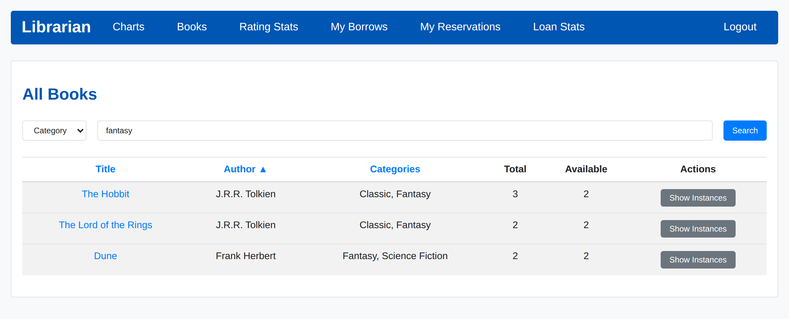
/charts는 최근 3개월(loan_date >= CURRENT_DATE - INTERVAL '3 months')의 대출을 집계한다. 대출은 복본(BookCopy)을 참조하지만 Book 단위로 GROUP BY하므로 같은 책의 복본은 합산된다. 하나의 질의를 $1에 NULL 또는 카테고리 id를 넣어 전체 차트와 카테고리별 차트에 함께 쓴다.
SELECT b.title, a.author_name AS author, ... AS categories, COUNT(*)::int AS borrow_count
FROM Loan l JOIN BookCopy cp ON cp.copy_id = l.copy_id
JOIN Book b ON b.book_id = cp.book_id JOIN Author a ON a.author_id = b.author_id
WHERE l.loan_date >= CURRENT_DATE - INTERVAL '3 months'
AND ($1::int IS NULL OR EXISTS (SELECT 1 FROM Book_Category bc
WHERE bc.book_id = b.book_id AND bc.category_id = $1::int))
GROUP BY b.book_id, a.author_id
ORDER BY borrow_count DESC, b.title
LIMIT 10
Author별로 묶은 표를 추가했다. 스켈레톤에는 없었지만 명세가 "인기 서적/저자 차트"를 요구한다.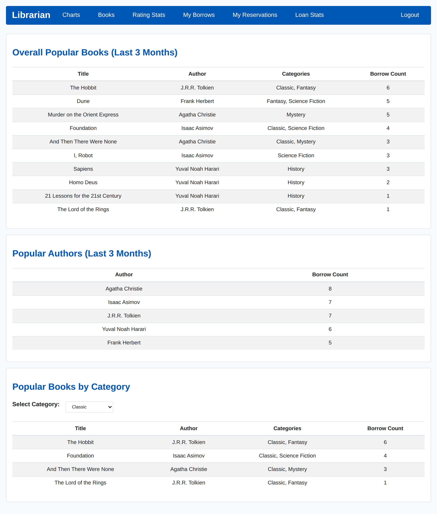
대출(POST /books/instances/:id/borrow)은 하나의 트랜잭션 안에서 다음 순서로 처리한다.
FOR UPDATE로 잠근다. 같은 회원의 대출 요청 두 개가 동시에 한도 검사를 통과하는 일을 막는다.FOR UPDATE로 잠그고 상태가 available인지 확인한다.book_id)의 수, 연체 수(CURRENT_DATE >= due_date, 즉 대출 후 7일 이상).Loan에 반납 기한 CURRENT_DATE + 7로 대출을 넣고, 복본 상태를 borrowed로 바꾸고, 그 회원의 대기 예약을 fulfilled로 바꾼다.SELECT COUNT(*)::int AS open_count,
COUNT(*) FILTER (WHERE cp.book_id = $2)::int AS same_book,
COUNT(*) FILTER (WHERE CURRENT_DATE >= l.due_date)::int AS overdue
FROM Loan l JOIN BookCopy cp ON cp.copy_id = l.copy_id
WHERE l.user_id = $1 AND l.return_date IS NULL
| 요구 사항 | 위반 시 메시지 (HTTP 400) |
|---|---|
| 대출 중이 아닌 책만 대출 | This copy is not available. (최종적으로는 Loan(copy_id) WHERE return_date IS NULL 부분 유일 인덱스가 막음) |
| 동시에 최대 3권 | You have reached the maximum borrowing limit (3 books). |
| 같은 책 2권 동시 대출 금지 | You are already borrowing a copy of this book. |
| 연체 중이면 대출 금지 | You have an overdue book. Return it before borrowing another. |
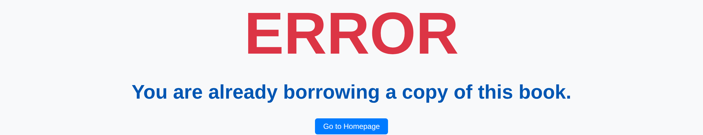
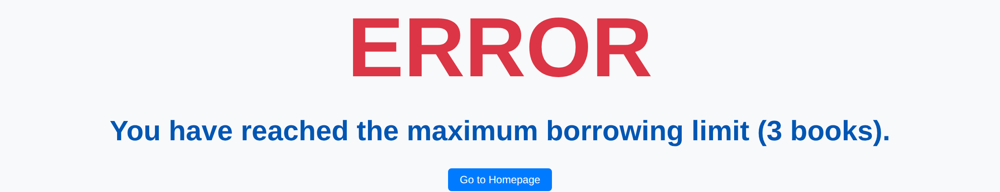
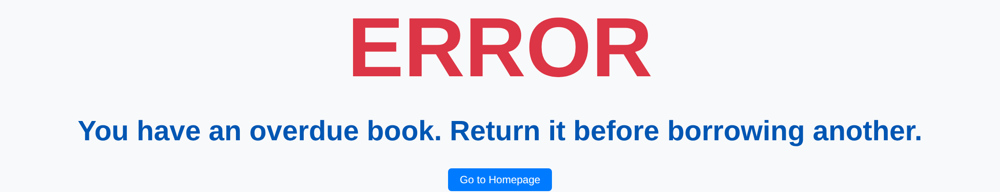
반납(POST /borrowings/:id/return)은 UPDATE Loan SET return_date = CURRENT_DATE WHERE loan_id = $1 AND user_id = $2 AND return_date IS NULL RETURNING copy_id 한 문장으로 처리하고, 같은 트랜잭션에서 복본을 다시 available로 바꾼다. 조건에 세션의 회원 ID가 들어 있으므로 요청을 조작해도 다른 사람의 대출은 반납할 수 없고, 이미 반납한 대출을 다시 반납할 수도 없다.
/borrowings는 로그인한 회원의 모든 대출을 최신순으로 보여 준다. 대출이 복본을 참조하므로 첫 열의 #번호로 같은 책 중에서도 정확히 어떤 복본을 빌렸는지 알 수 있다. 반납하지 않은 대출에는 Return 버튼이 있다.
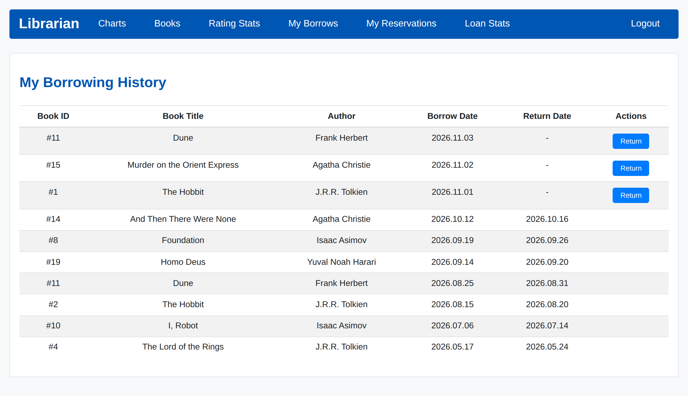
/books/add): 제목, 저자 1명, 카테고리 여러 개, 수량(1~100)을 받는다. Choices.js에서 목록의 항목을 고르면 id:<번호>가, 새 이름을 입력하면 그 문자열이 전송된다. 서버는 id: 값은 실제로 있는 행인지 확인하고, 새 이름은 대소문자를 무시하고 같은 이름이 있으면 재사용하고, 없으면 INSERT ... ON CONFLICT DO UPDATE ... RETURNING으로 만든다. 같은 저자의 같은 제목이 이미 있으면 새 Book을 만들지 않고 복본과 카테고리만 추가한다. 복본은 generate_series로 한 번에, 카테고리 연결은 unnest($2::int[]) ... ON CONFLICT DO NOTHING으로 넣는다. 전체가 하나의 트랜잭션이다.Book_Category 교차 릴레이션으로 한 책이 여러 카테고리에 속한다(그림 9의 Demo Book: Classic, Poetry).ON DELETE CASCADE로 그 책의 카테고리 연결, 리뷰, 예약까지 정리한다.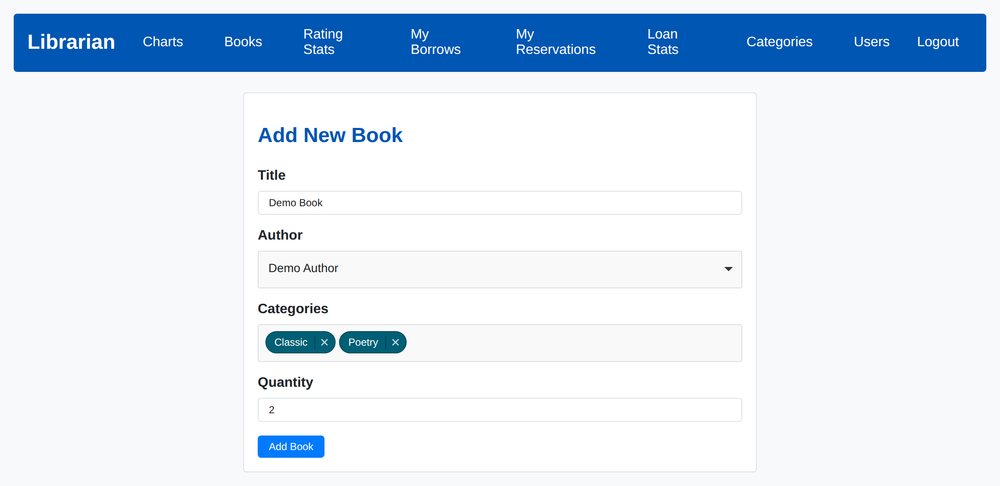
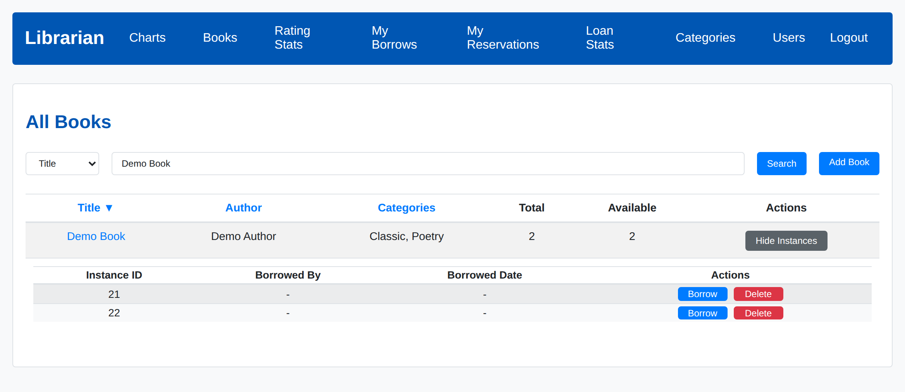
스켈레톤에는 삭제만 있었으나 명세에 맞춰 추가 폼과 POST /categories/add를 만들었다. 이름은 앞뒤 공백을 지우고 1~50자여야 하며, 대소문자만 다른 이름은 중복으로 거절한다. 중복 검사와 삽입을 INSERT ... SELECT ... WHERE NOT EXISTS (lower 비교) ON CONFLICT DO NOTHING 한 문장으로 처리한다. 카테고리를 삭제하면 Book_Category 연결만 CASCADE로 지워지므로 책은 다른 카테고리를 그대로 유지한다.
/users는 모든 회원의 ID와 역할을 보여 주고, ID 또는 역할로 검색할 수 있다. 검색 대상 컬럼은 화이트리스트로 고르고, 서적 검색과 같은 이스케이프를 적용한다.
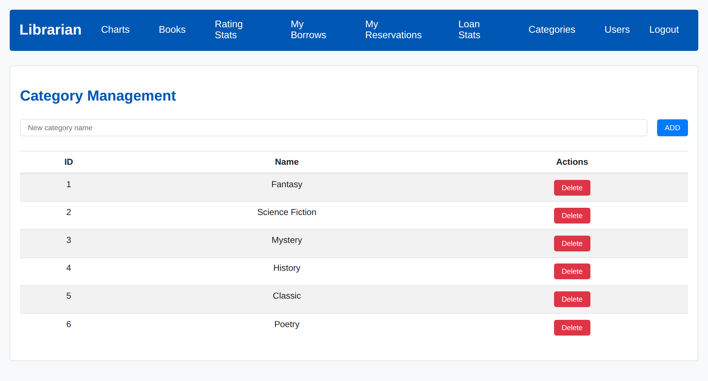
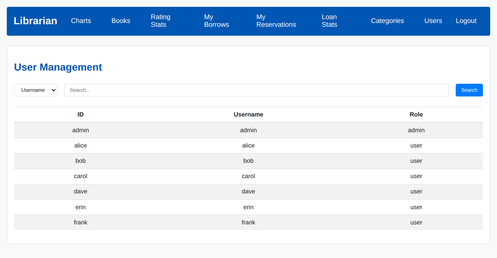
명령은 모두 프로젝트 루트에서 실행한다. views/, public/, .env를 현재 폴더 기준으로 찾기 때문이다. 같은 내용이 제출 파일의 README.md에도 있다.
psql에서 CREATE USER library WITH PASSWORD '...'; CREATE DATABASE library OWNER library;)
sudo -u postgres createuser -P library # 새 비밀번호 입력
sudo -u postgres createdb -O library librarynpm install
.env.example을 .env로 복사하고 2단계의 정보로 고친다.
cp .env.example .env
# .env
DATABASE_URL="postgresql://library:<비밀번호>@localhost:5432/library"npm run db:init
http://localhost:3000에 접속한다.
npm start
| ID | 비밀번호 | 역할 | 초기화 직후 상태 |
|---|---|---|---|
admin | admin1234 | 관리자 | 대출 없음 |
alice | user1234 | 사용자 | The Hobbit, Murder on the Orient Express 대출 중 |
bob | user1234 | 사용자 | 3권 대출 중 (대출 한도) |
carol | user1234 | 사용자 | 10일 전 대출을 미반납 (연체) |
dave | user1234 | 사용자 | Murder on the Orient Express 대출 중 |
erin, frank | user1234 | 사용자 | Murder on the Orient Express 예약 대기 1, 2순위 |
시드에는 저자 5명, 도서 10종(복본 20권), 카테고리 5개, 약 6개월에 걸친 대출 43건, 리뷰 14건, 예약 4건이 들어 있다. 대출 날짜는 초기화한 날을 기준으로 계산되므로 채점·시연 직전에 npm run db:init을 다시 실행하는 것을 권장한다. 관리자 가입 코드는 2022065250이다.
4-1 보고서에서 설계한 대로 비통계 기능 2가지(E1, E2)와 통계 기능 정확히 2가지(S1, S2)를 구현했다. 통계가 2가지를 넘지 않도록, 이 기능들 외의 화면에는 순위나 평균 같은 집계 지표를 따로 두지 않았다(인기 차트는 필수 기능). 모두 4-1에서 설계한 Review, Reservation 릴레이션과 그 제약조건을 그대로 사용한다.
Review/books/:id가 열린다(로그인 불필요). 책 정보, 평균 별점과 리뷰 수, 모든 리뷰가 최신순으로 나온다.WHERE EXISTS가 대출 이력이 없는 회원을 막고, UNIQUE (user_id, book_id) 충돌이 두 번째 작성을 수정으로 바꾼다. 삭제는 user_id 조건 때문에 본인 리뷰만 지워진다.INSERT INTO Review (user_id, book_id, rating, comment)
SELECT $1::varchar, $2::int, $3::smallint, $4::text
WHERE EXISTS (SELECT 1 FROM Loan l JOIN BookCopy cp ON cp.copy_id = l.copy_id
WHERE l.user_id = $1::varchar AND cp.book_id = $2::int)
ON CONFLICT (user_id, book_id) DO UPDATE SET rating = EXCLUDED.rating, comment = EXCLUDED.comment
-- 영향 행이 0이면 403 "Only members who have borrowed this book can review it."
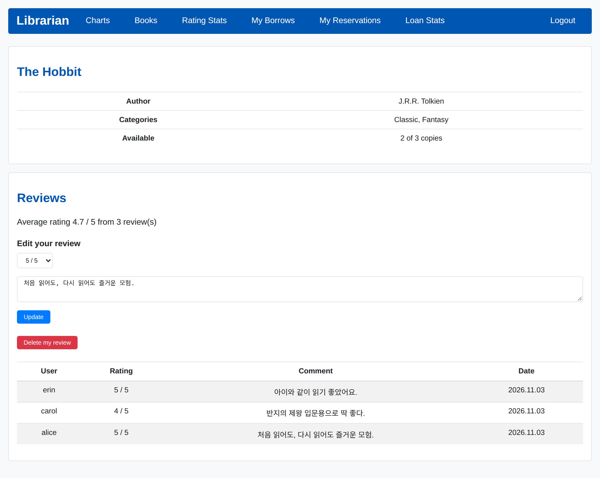
ReservationFOR SHARE로 잠가 검사 중에 대출·반납이 끼어들지 못하게 하고, ON CONFLICT (user_id, book_id) WHERE status = 'waiting' DO NOTHING으로 4-1의 부분 유일 인덱스를 이용해 중복 예약을 거절한다./reservations는 본인 예약을 대기 중인 것부터 보여 주고, 대기 순번을 (reserved_at, reservation_id)가 자기 예약 이하인 대기 예약 수로 계산한다. 대기 중인 예약은 Cancel로 취소(cancelled)할 수 있다.fulfilled가 되고 다음 회원이 1순위가 된다.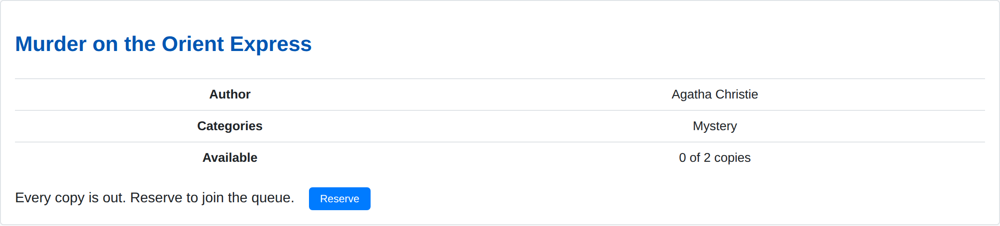
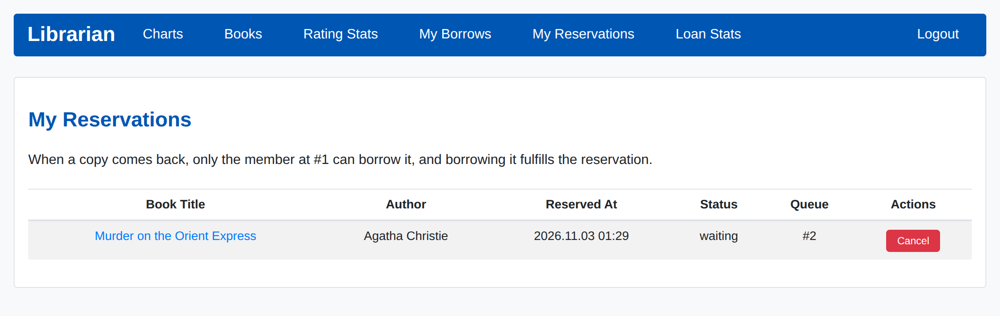
Review Book Book_Category Category/stats/ratings(로그인 불필요). ① 도서별 평균 별점(소수 둘째 자리)과 리뷰 수. 리뷰가 없는 책은 맨 아래에 '-'로 표시한다. ② 카테고리별 평균 별점, 리뷰 수, 가장 평점이 높은 책(평균이 같으면 리뷰가 많은 책, 그다음 제목순). 별도 통계 테이블 없이 매번 Review에서 집계하므로 원본과 항상 일치한다.SELECT c.category_name AS category, COUNT(r.review_id)::int AS review_count,
ROUND(AVG(r.rating), 2) AS avg_rating,
(SELECT b.title FROM Book_Category tbc JOIN Book b ON b.book_id = tbc.book_id
JOIN Review tr ON tr.book_id = b.book_id
WHERE tbc.category_id = c.category_id
GROUP BY b.book_id ORDER BY AVG(tr.rating) DESC, COUNT(*) DESC, b.title LIMIT 1) AS top_book
FROM Category c LEFT JOIN Book_Category bc ON bc.category_id = c.category_id
LEFT JOIN Review r ON r.book_id = bc.book_id
GROUP BY c.category_id
ORDER BY avg_rating DESC NULLS LAST, review_count DESC, category
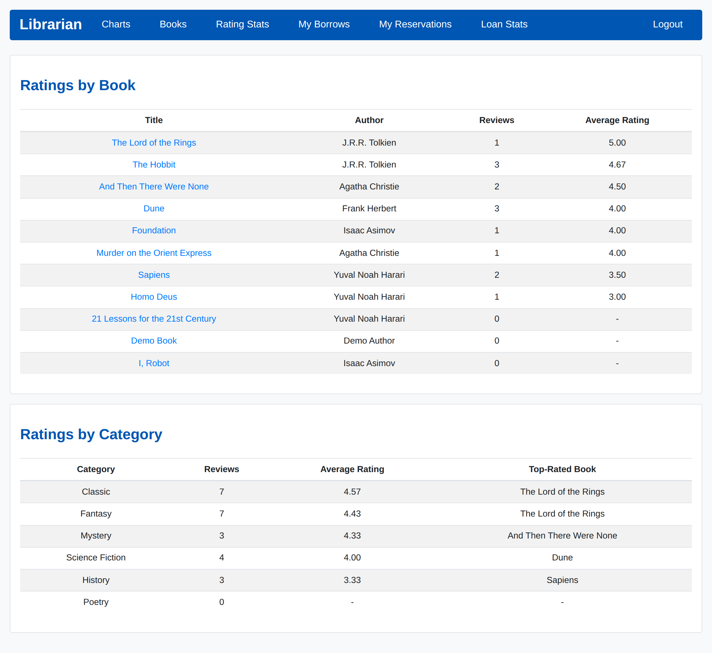
Loan Users/stats/loans(로그인 필요). 모든 회원은 본인의 누적 대출 수, 반납 수, 기한 내 반납 수, 기한 내 반납률(반납한 대출 중 return_date < due_date의 비율)을 본다.return_date >= due_date) 아직 반납하지 않고 기한이 지난 대출을 연체로 센다. ② 회원별 누적 대출 수 순위(다독 순위, RANK()). 다른 회원의 기록이 드러나므로 관리자 전용이며, 두 질의는 세션의 역할이 admin일 때만 실행되어 다른 회원에게는 데이터 자체가 전달되지 않는다.SELECT to_char(loan_date, 'YYYY-MM') AS month,
COUNT(*)::int AS loans,
COUNT(*) FILTER (WHERE COALESCE(return_date, CURRENT_DATE) >= due_date)::int AS overdue,
ROUND(100.0 * COUNT(*) FILTER (WHERE COALESCE(return_date, CURRENT_DATE) >= due_date) / COUNT(*), 1) AS overdue_rate
FROM Loan GROUP BY month ORDER BY month DESC
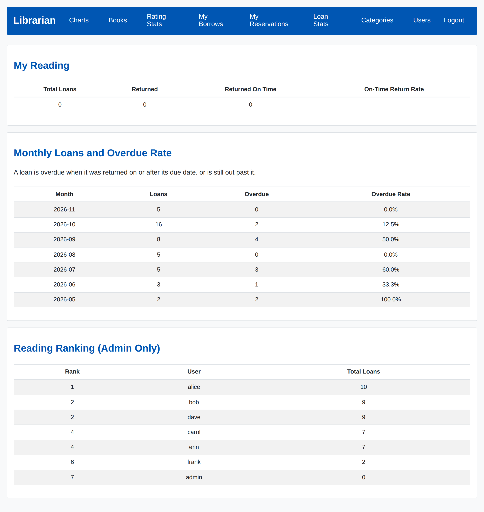
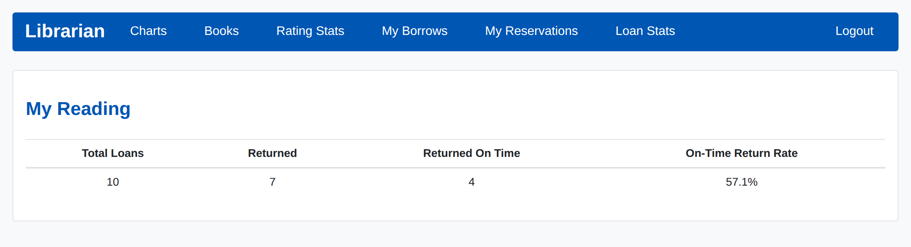
각 기능을 구현한 뒤 별도의 테스트용 데이터베이스에 시드를 새로 넣고, 실제 라우터·컨트롤러·뷰를 그대로 띄운 상태에서 HTTP 요청으로 검사했다. 마지막에는 전 기능을 한 번에 다시 점검했다.
| 점검 | 내용 | 결과 |
|---|---|---|
| 스키마 제약조건 | db:init 2회 연속 실행. 잘못된 ID 형식, 역할·상태 값, 같은 복본의 두 번째 미반납 대출, 기한 ≤ 대출일, 별점 6, 중복 리뷰, 중복 대기 예약, 저자·회원 삭제(RESTRICT), FK에 NULL을 각각 넣어 거부되는지, 책 삭제가 복본·대출·예약·리뷰로 CASCADE되는지 확인 | 13/13 의도대로 |
| 필수 기능 전체 | 실제 세션과 로그인으로 회원가입·로그인 규칙, 세션 ID 갱신, 검색·정렬과 화이트리스트, 복본 API, 대출 규칙 4가지와 반납, 도서·카테고리·회원 관리, 관리자 경로 7개의 403·로그인 리다이렉트, 차트(원본 대출에서 다시 계산한 값과 비교), 역할별 메뉴 링크 | 83/83 통과 |
| 추가 기능 | 리뷰 작성·수정·삭제와 권한, 예약·취소와 1순위 인계, 통계 수치(원본 행에서 JS로 다시 계산한 값과 비교) | 모두 통과 |
| 시연 대본 | 시연 영상의 12개 장면을 순서대로 자동 실행해 화면에 나와야 할 결과 확인 | 56/56 통과 |
title; DROP TABLE Book을 넣어도 기본 정렬로 처리된다.<%= %>로 이스케이프해 출력한다. 리뷰·카테고리 이름의 HTML은 글자로 보인다. 복본 표는 클라이언트에서 HTML을 조립하지만, 들어가는 값은 숫자, 정해진 상태 값, CHECK로 문자 집합을 제한한 회원 ID, 서버에서 만든 날짜뿐이다.| 항목 | 설명 |
|---|---|
| 복본 삭제와 대출 기록 | 4-1에서 정한 대로 복본을 지우면 그 복본의 대출 기록도 CASCADE로 지워진다. 기록을 남기려면 복본에 폐기 상태를 두는 소프트 삭제가 대안이다. |
| 예약 1순위의 대기 | 1순위 회원이 한도 초과나 연체로 바로 빌릴 수 없으면, 그 회원이 취소할 때까지 반납된 복본을 다른 회원이 빌릴 수 없다. 예약 만료 기한을 두면 해결된다. |
| CSRF 토큰 | 폼에 CSRF 토큰은 없다. SameSite=Lax 쿠키가 다른 사이트의 POST 요청을 막아 준다. |
| 세션 저장소와 비밀 키 | 세션은 메모리에 저장되어 서버를 다시 시작하면 모두 로그아웃되고, 세션 서명 키는 스켈레톤 코드에 고정되어 있다. 운영 환경이라면 DB 기반 세션 저장소와 환경 변수의 키를 써야 한다. |
영상은 npm run db:init과 npm start로 시작해, 회원가입(일반·관리자 코드 오류·관리자) → 로그인과 권한 → 서적 목록 검색·정렬과 복본 → 인기 차트 → 대출 규칙 4가지 → 반납과 대출 기록 → 관리자의 도서 추가·복본 삭제·카테고리 추가·삭제·회원 검색 → E1 리뷰 → E2 예약과 1순위 인계 → S1 평점 통계 → S2 대출 통계 순서로 모든 기능을 시연하고, 각 동작을 자막(또는 음성)으로 설명한다.